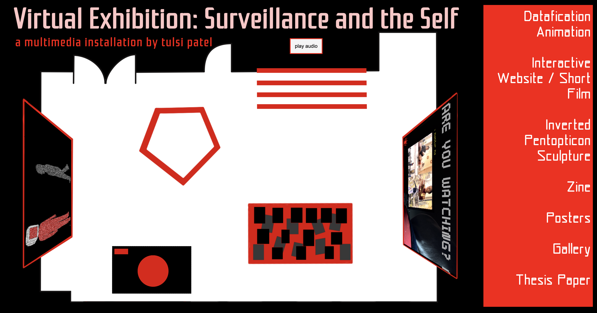
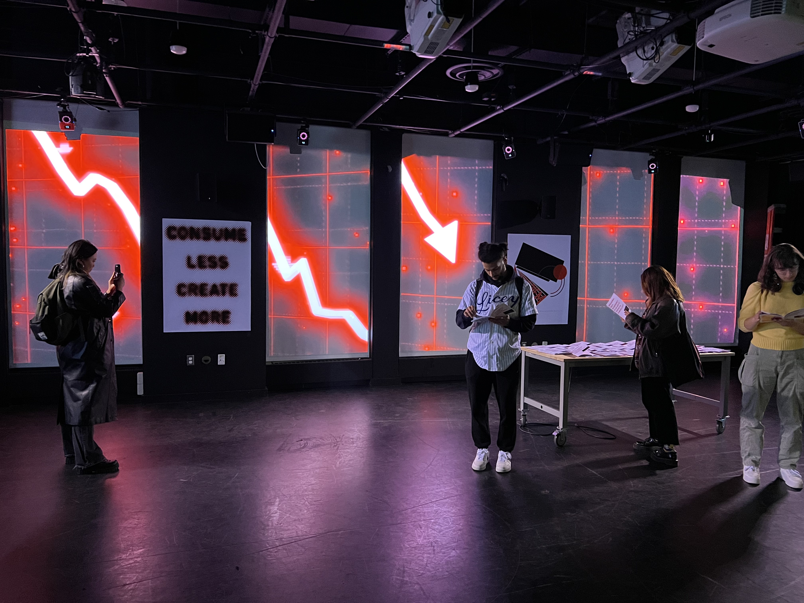

Surveillance & Selfhood: Interactive Thesis Exhibition
Tools: Figma, Procreate, Premiere Pro, Adobe InDesign
My magnum opus (so far).
For my senior thesis in Digital Studies at Yale, I created a multimedia exhibition exploring how surveillance culture reshapes our understanding of authenticity, selfhood, and privacy. The project aimed to make invisible forms of everyday surveillance viscerally apparent—transforming abstract concepts into tangible, emotional experiences.
I designed an intentionally overwhelming environment that manifests the weight of constant observation. The installation forces viewers to confront the unseen gazes that shape our daily lives—from smartphone tracking to social media algorithms to government data collection.
The experience was grounded in extensive research examining the intersection of technology, privacy, and human identity, exploring how surveillance transforms our most intimate relationship: the one we have with ourselves.
Each element was grounded in extensive scholarly research and theoretical framework, detailed in my accompanying thesis paper. The project bridged critical theory with creative practice, examining how surveillance technologies fundamentally reshape human behavior and self-understanding.
The entire exhibition has been adapted into a virtual experience, allowing for broader access to this exploration of surveillance's pervasive influence. This digital version preserves the immersive quality of the original installation while reaching audiences beyond the physical gallery space.
Experience the virtual version of the exhibition here.

The exhibition comprised five interconnected pieces, each examining different facets of surveillance culture:
• Sculptural installation - A "panopticon" that viewers could step inside
• Animated film - Visual narrative about datafication
• Interactive website - Digital experience revealing self-surveillance
• Critical zine - Printed exploration of privacy, surveillance, and what we can do about it
• Visual identity system - Graphics reflecting surveillance aesthetics

